GAC Series cụm FRL
GAC Series cụm FRL: thông tin kỹ thuật, datasheet và cấu hình cần kiểm tra trước khi chọn FRL hoặc cụm xử lý khí.
280 trang sản phẩm AirTAC theo nhóm và series. Dùng ô tra mã để tìm nhanh theo part number hoặc tên series.
GAC Series cụm FRL: thông tin kỹ thuật, datasheet và cấu hình cần kiểm tra trước khi chọn FRL hoặc cụm xử lý khí.

GAC100 Series cụm FRL: thông tin kỹ thuật, datasheet và cấu hình cần kiểm tra trước khi chọn FRL hoặc cụm xử lý khí.

GAFC Series cụm FRL: thông tin kỹ thuật, datasheet và cấu hình cần kiểm tra trước khi chọn FRL hoặc cụm xử lý khí.

GAFC100 Series cụm FRL: thông tin kỹ thuật, datasheet và cấu hình cần kiểm tra trước khi chọn FRL hoặc cụm xử lý khí.

GAFR Series bộ lọc điều áp: thông tin kỹ thuật, datasheet và cấu hình cần kiểm tra trước khi chọn FRL hoặc cụm xử lý khí.

GAFR100 Series bộ lọc điều áp: thông tin kỹ thuật, datasheet và cấu hình cần kiểm tra trước khi chọn FRL hoặc cụm xử lý khí.

GAF Series bộ lọc: thông tin kỹ thuật, datasheet và cấu hình cần kiểm tra trước khi chọn FRL hoặc cụm xử lý khí.

GAF100 Series bộ lọc: thông tin kỹ thuật, datasheet và cấu hình cần kiểm tra trước khi chọn FRL hoặc cụm xử lý khí.

GAR Series regulator: thông tin kỹ thuật, datasheet và cấu hình cần kiểm tra trước khi chọn FRL hoặc cụm xử lý khí.

GAR100 Series regulator: thông tin kỹ thuật, datasheet và cấu hình cần kiểm tra trước khi chọn FRL hoặc cụm xử lý khí.
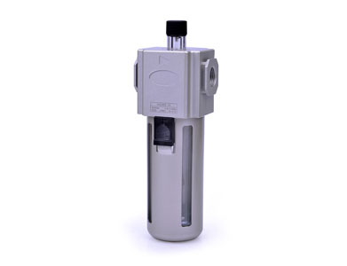
GAL Series Lubricatior: thông tin kỹ thuật, datasheet và cấu hình cần kiểm tra trước khi chọn FRL hoặc cụm xử lý khí.
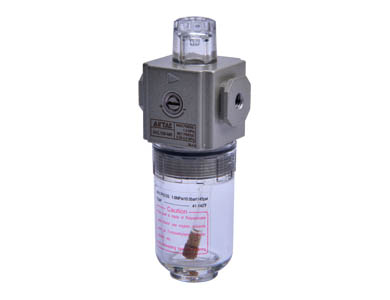
GAL100 Series lubricator: thông tin kỹ thuật, datasheet và cấu hình cần kiểm tra trước khi chọn FRL hoặc cụm xử lý khí.
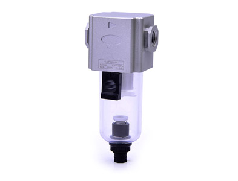
Short PC bowl type
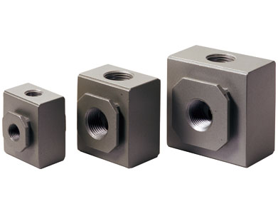
khối chia khí
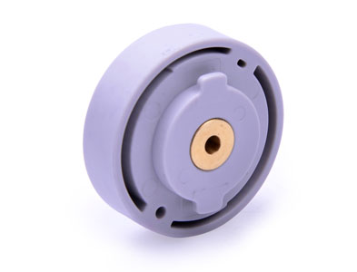
van hồi lưu
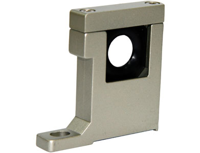
Joint accessories--bracket
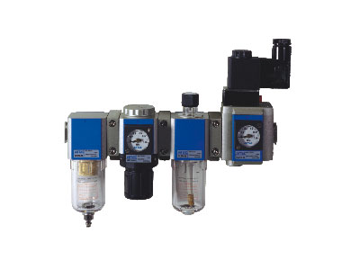
GV Series van soft-start: thông tin kỹ thuật, datasheet và cấu hình cần kiểm tra trước khi chọn FRL hoặc cụm xử lý khí.
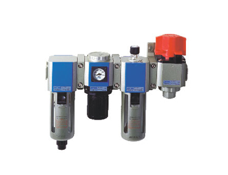
GZ Series van safe on-off: thông tin kỹ thuật, datasheet và cấu hình cần kiểm tra trước khi chọn FRL hoặc cụm xử lý khí.
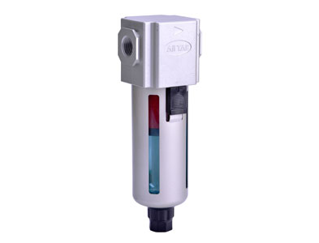
Preparation unit

Preparation unit
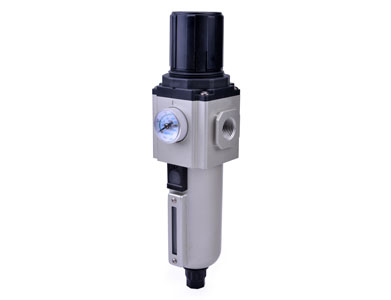
GPFR Series precision filter-regulator: thông tin kỹ thuật, datasheet và cấu hình cần kiểm tra trước khi chọn FRL hoặc cụm xử lý khí.
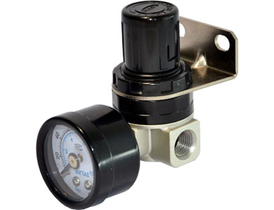
SDR Series regulator: thông tin kỹ thuật, datasheet và cấu hình cần kiểm tra trước khi chọn FRL hoặc cụm xử lý khí.
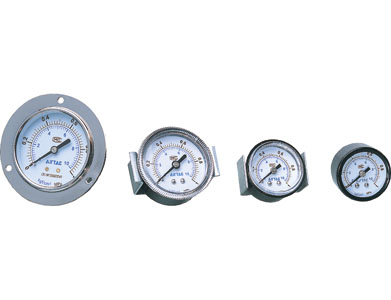
đồng hồ áp: thông tin kỹ thuật, datasheet và cấu hình cần kiểm tra trước khi chọn FRL hoặc cụm xử lý khí.
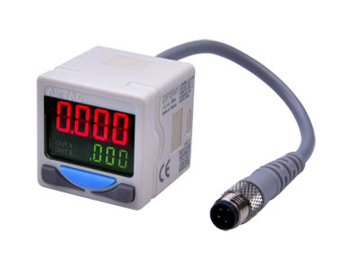
DPS Series cảm biến áp suất hiển thị số: thông tin kỹ thuật, datasheet và cấu hình cần kiểm tra trước khi chọn FRL hoặc cụm xử lý khí.
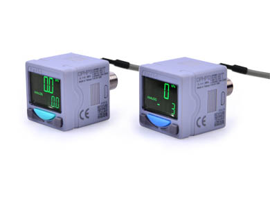
DPH Series cảm biến áp suất hiển thị số(Analog ...
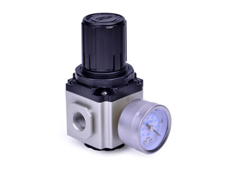
GVR Series vacuum regulator: thông tin kỹ thuật, datasheet và cấu hình cần kiểm tra trước khi chọn FRL hoặc cụm xử lý khí.
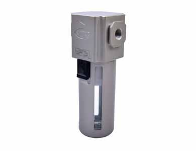
GVF Series Vacuum bộ lọc: thông tin kỹ thuật, datasheet và cấu hình cần kiểm tra trước khi chọn FRL hoặc cụm xử lý khí.

110,160 Series coil: thông tin kỹ thuật, datasheet và cấu hình cần kiểm tra trước khi chọn van/coil/manifold.

116,170 Series coil: thông tin kỹ thuật, datasheet và cấu hình cần kiểm tra trước khi chọn van/coil/manifold.

3V-van manifold: thông tin kỹ thuật, datasheet và cấu hình cần kiểm tra trước khi chọn van/coil/manifold.

4V/5V-van manifold: thông tin kỹ thuật, datasheet và cấu hình cần kiểm tra trước khi chọn van/coil/manifold.

3V2 Series van

3V3 Series van

3V2M Series Solenoid van

CPV15 Series micro-solenoid valve
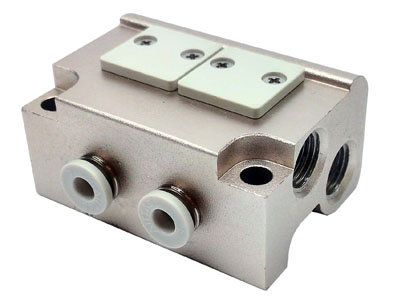
micro-solenoid valve (3/2 way)
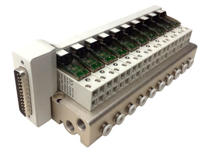
Integrated van điện từ (3/2 way)
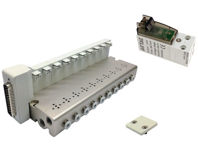
Integrated van điện từ (3/2 way)
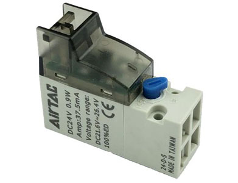
micro-solenoid valve
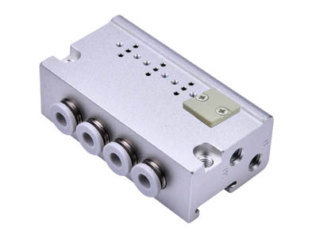
CPV10 Series manifold: thông tin kỹ thuật, datasheet và cấu hình cần kiểm tra trước khi chọn van/coil/manifold.
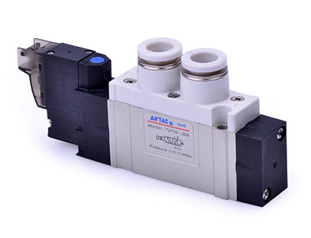
7V Series Solenoid van
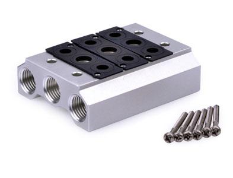
7V Series manifold: thông tin kỹ thuật, datasheet và cấu hình cần kiểm tra trước khi chọn van/coil/manifold.
6V Series van điện từ (5/2 way 5/3 way): thông tin kỹ thuật, datasheet và cấu hình cần kiểm tra trước khi chọn van/coil/manifold.
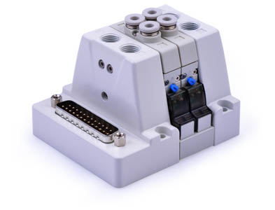
Integrated van điện từ
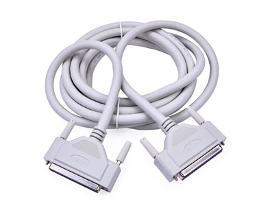
F-DSUB25/F-DSUB37 cable: thông tin kỹ thuật, datasheet và cấu hình cần kiểm tra trước khi chọn van/coil/manifold.
6TV Series manifold: thông tin kỹ thuật, datasheet và cấu hình cần kiểm tra trước khi chọn van/coil/manifold.
6TV Series van điện từ (3/2 way): thông tin kỹ thuật, datasheet và cấu hình cần kiểm tra trước khi chọn van/coil/manifold.
6HV Series Integrated van điện từ (5/2 way 5/3 way): thông tin kỹ thuật, datasheet và cấu hình cần kiểm tra trước khi chọn van/coil/manifold.
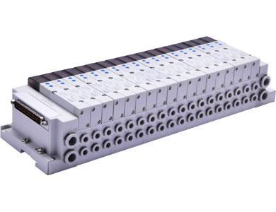
6D/6DW Series Integrated van điện từ—with commu...

3V1 Series van

3V100 Series van
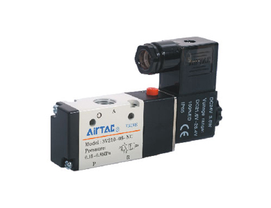
3V200 Series van
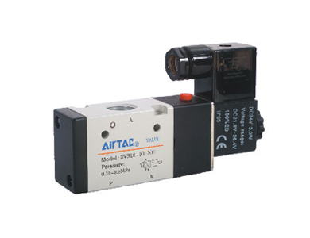
3V300 Series van điện từ (3/2 way): thông tin kỹ thuật, datasheet và cấu hình cần kiểm tra trước khi chọn van/coil/manifold.

4V100 Series van điện từ (5/2 way, 5/3 way): thông tin kỹ thuật, datasheet và cấu hình cần kiểm tra trước khi chọn van/coil/manifold.

4V200 Series van điện từ (5/2 way, 5/3 way): thông tin kỹ thuật, datasheet và cấu hình cần kiểm tra trước khi chọn van/coil/manifold.

4V300 Series van

4V400 Series van điện từ (5/2 way, 5/3 way): thông tin kỹ thuật, datasheet và cấu hình cần kiểm tra trước khi chọn van/coil/manifold.
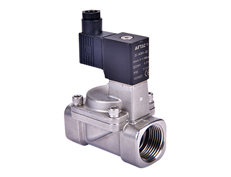
2SA Series (Internally piloted and normally closed...

2SA Series (Direct-acting and normally closed) Flu...
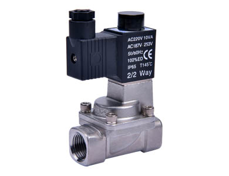
2KSA Series (Internally piloted and normally opene...
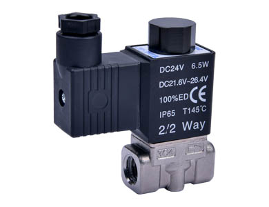
2KSA Series (Direct-acting and normally opened) Fl...
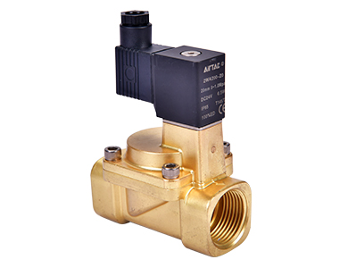
2WA Series (Internally piloted and normally closed...
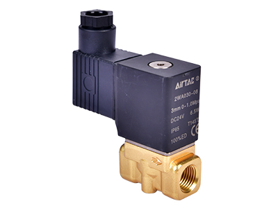
2WA Series (Direct-acting and normally closed) Flu...
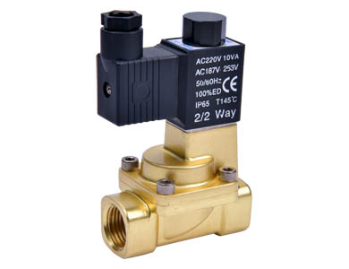
2KWA Series (Internally piloted and normally opene...
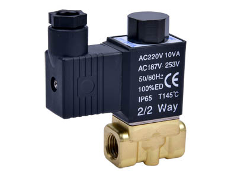
2KWA Series (Direct-acting and normally opened) Fl...

2LA Series(Internally piloted and normally closed)...
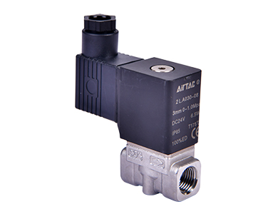
2LA Series(Direct-acting and normally closed) Flui...
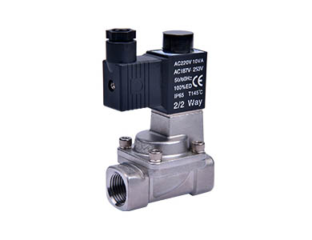
2KLA Series(Internally piloted and normally opened...
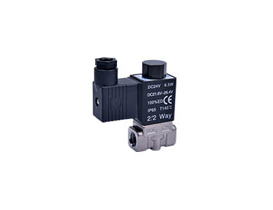
2KLA Series(Direct-acting and normally opened) Flu...
2W Series(Direct acting and normally closed) Fluid Control van(2/2 way): thông tin kỹ thuật, datasheet và cấu hình cần kiểm tra trước khi chọn van/coil/manifold.
2W Series(Internally piloted and normally closed) Fluid Control van(2/2 way): thông tin kỹ thuật, datasheet và cấu hình cần kiểm tra trước khi chọn van/coil/manifold.
2KW Series(Direct acting and normally opened) Fluid Control van(2/2 way): thông tin kỹ thuật, datasheet và cấu hình cần kiểm tra trước khi chọn van/coil/manifold.
2KW Series(Internally piloted and normally opened) Fluid Control van(2/2 way): thông tin kỹ thuật, datasheet và cấu hình cần kiểm tra trước khi chọn van/coil/manifold.
2S Series(Direct acting and normally closed) Fluid Control van(2/2 way): thông tin kỹ thuật, datasheet và cấu hình cần kiểm tra trước khi chọn van/coil/manifold.
2S Series(Internally piloted and normally closed) Fluid Control van(2/2 way): thông tin kỹ thuật, datasheet và cấu hình cần kiểm tra trước khi chọn van/coil/manifold.
2KS Series(Direct acting and normally opened) Fluid Control van(2/2 way): thông tin kỹ thuật, datasheet và cấu hình cần kiểm tra trước khi chọn van/coil/manifold.
2KS Series(Internally piloted and normally opened) Fluid Control van(2/2 way): thông tin kỹ thuật, datasheet và cấu hình cần kiểm tra trước khi chọn van/coil/manifold.
2L Series(Direct acting and normally closed) Fluid Control van(2/2 way): thông tin kỹ thuật, datasheet và cấu hình cần kiểm tra trước khi chọn van/coil/manifold.
2L Series(Internally piloted and normally closed) Fluid Control van(2/2 way): thông tin kỹ thuật, datasheet và cấu hình cần kiểm tra trước khi chọn van/coil/manifold.
2KL Series(Direct acting and normally opened) Fluid Control van(2/2 way): thông tin kỹ thuật, datasheet và cấu hình cần kiểm tra trước khi chọn van/coil/manifold.
2KL Series(Internally piloted and normally opened) Fluid Control van(2/2 way): thông tin kỹ thuật, datasheet và cấu hình cần kiểm tra trước khi chọn van/coil/manifold.
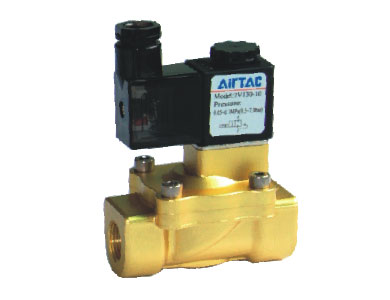
2V Series van
6A Series Air van (5/2 5/3 way): thông tin kỹ thuật, datasheet và cấu hình cần kiểm tra trước khi chọn van/coil/manifold.
6A van manifold: thông tin kỹ thuật, datasheet và cấu hình cần kiểm tra trước khi chọn van/coil/manifold.
6TA Series Air van (3/2 way): thông tin kỹ thuật, datasheet và cấu hình cần kiểm tra trước khi chọn van/coil/manifold.
6TA Series manifold: thông tin kỹ thuật, datasheet và cấu hình cần kiểm tra trước khi chọn van/coil/manifold.
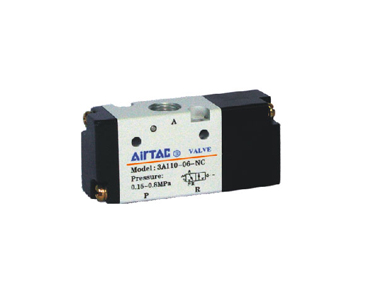
3A100 Series van
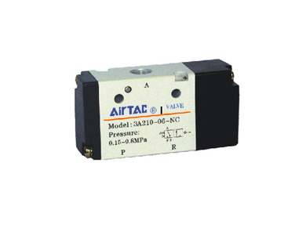
3A200 Series van
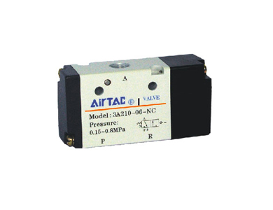
3A300 Series van
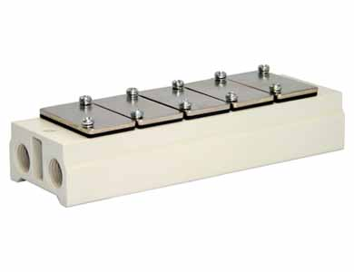
3A-van manifold: thông tin kỹ thuật, datasheet và cấu hình cần kiểm tra trước khi chọn van/coil/manifold.
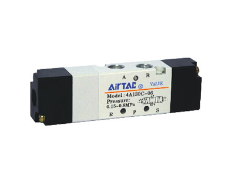
4A100 Series van
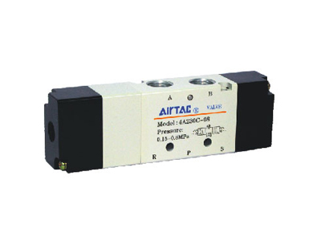
4A200 Series van
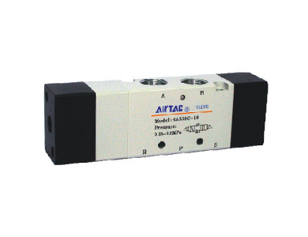
4A300 Series van
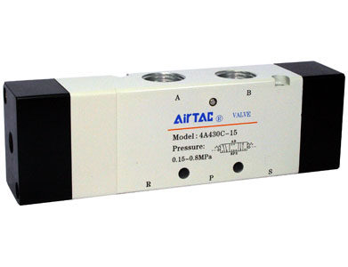
4A400 Series van
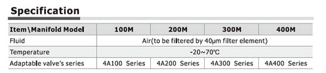
4A-van manifold: thông tin kỹ thuật, datasheet và cấu hình cần kiểm tra trước khi chọn van/coil/manifold.
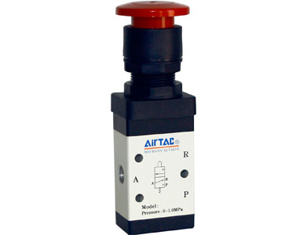
M3 Series van
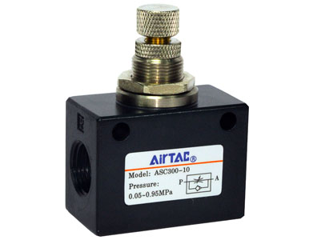
ASC Series van
Control van (3/2 way, 5/3 way)
Control van (5/2 way)
Control van (3/2 way)
Non-return van
PCV Series Pilot no-return van: thông tin kỹ thuật, datasheet và cấu hình cần kiểm tra trước khi chọn van/coil/manifold.
Foot pedal van
3L Series van
4L Series van
4H Series van
4HV,4HVL Series van
Hand slide van
S3 Series van

TR Series xi lanh hai ty: thông tin kỹ thuật, datasheet và kích thước cần kiểm tra trước khi chọn xi lanh/cơ cấu chấp hành.

TCL,TCM Series guided xi lanh: thông tin kỹ thuật, datasheet và kích thước cần kiểm tra trước khi chọn xi lanh/cơ cấu chấp hành.

HGS Series xi lanh bàn trượt: thông tin kỹ thuật, datasheet và kích thước cần kiểm tra trước khi chọn xi lanh/cơ cấu chấp hành.

HLF Series Low profile precision slide table cylin...

HLH Series xi lanh bàn trượt: thông tin kỹ thuật, datasheet và kích thước cần kiểm tra trước khi chọn xi lanh/cơ cấu chấp hành.

HLQ Series xi lanh bàn trượt(Ball bearing type): thông tin kỹ thuật, datasheet và kích thước cần kiểm tra trước khi chọn xi lanh/cơ cấu chấp hành.

HLS Series xi lanh bàn trượt(Cross roller beari...

RMS Series Rodless magnetic xi lanh
RMT Series Rodless magnetic xi lanh(With guide)
RMTL Series Rodless magnetic xi lanh(With exactit...

RMH Series Rodless magnetic xi lanh(With Linear g...
HRQ Series Rotary table xi lanh: thông tin kỹ thuật, datasheet và kích thước cần kiểm tra trước khi chọn xi lanh/cơ cấu chấp hành.
HRS Series Rotary table xi lanh: thông tin kỹ thuật, datasheet và kích thước cần kiểm tra trước khi chọn xi lanh/cơ cấu chấp hành.

HRQ Series Rotary table xi lanh: thông tin kỹ thuật, datasheet và kích thước cần kiểm tra trước khi chọn xi lanh/cơ cấu chấp hành.

HRS Series Rotary table xi lanh: thông tin kỹ thuật, datasheet và kích thước cần kiểm tra trước khi chọn xi lanh/cơ cấu chấp hành.

HFD Series Compact air gripper: thông tin kỹ thuật, datasheet và kích thước cần kiểm tra trước khi chọn xi lanh/cơ cấu chấp hành.

HFC Series Air Gripper(Parallel open/close style)

Parallel open/close hollow style
Parallel style with guide track--Ball bearing

Parallel style with guide track-Roller bearing

Parallel with guide/longer stroke/ball bearing sty...

HFKP Series Parallel Gripper with dust-proof cover...
HFP Series Air Gripper(Mechanical parallel style)
HFY Series Air Gripper(Angular style)
HFR Series Air Gripper(180°open/close style)
HFT Series Wide Air Gripper
CMS,DMS Series Sensor: thông tin kỹ thuật, datasheet và kích thước cần kiểm tra trước khi chọn xi lanh/cơ cấu chấp hành.
EMS Series sensor: thông tin kỹ thuật, datasheet và kích thước cần kiểm tra trước khi chọn xi lanh/cơ cấu chấp hành.
NSU Series Standard xi lanh
NPB Series roundline xi lanh: thông tin kỹ thuật, datasheet và kích thước cần kiểm tra trước khi chọn xi lanh/cơ cấu chấp hành.
NACQ Series Compact xi lanh: thông tin kỹ thuật, datasheet và kích thước cần kiểm tra trước khi chọn xi lanh/cơ cấu chấp hành.
NACF Series Round Compact xi lanh: thông tin kỹ thuật, datasheet và kích thước cần kiểm tra trước khi chọn xi lanh/cơ cấu chấp hành.

US98A,UE95A Series ống polyurethane: thông tin kỹ thuật, datasheet và cấu hình cần kiểm tra trước khi chọn fitting, ống hoặc phụ kiện.

UCS、UCE Series

PA12,PA6 Series tube

Flame resistant tube

POC-đầu nối male: thông tin kỹ thuật, datasheet và cấu hình cần kiểm tra trước khi chọn fitting, ống hoặc phụ kiện.

PCF-đầu nối female: thông tin kỹ thuật, datasheet và cấu hình cần kiểm tra trước khi chọn fitting, ống hoặc phụ kiện.

PC-đầu nối male: thông tin kỹ thuật, datasheet và cấu hình cần kiểm tra trước khi chọn fitting, ống hoặc phụ kiện.

PV-co nối union elbow: thông tin kỹ thuật, datasheet và cấu hình cần kiểm tra trước khi chọn fitting, ống hoặc phụ kiện.
PLF-Female elbow: thông tin kỹ thuật, datasheet và cấu hình cần kiểm tra trước khi chọn fitting, ống hoặc phụ kiện.
PLL- Extended male elbow: thông tin kỹ thuật, datasheet và cấu hình cần kiểm tra trước khi chọn fitting, ống hoặc phụ kiện.
PL-Male elbow: thông tin kỹ thuật, datasheet và cấu hình cần kiểm tra trước khi chọn fitting, ống hoặc phụ kiện.
PSA-Straight Speed Controller: thông tin kỹ thuật, datasheet và cấu hình cần kiểm tra trước khi chọn fitting, ống hoặc phụ kiện.
PSS-Universal Speed Controller: thông tin kỹ thuật, datasheet và cấu hình cần kiểm tra trước khi chọn fitting, ống hoặc phụ kiện.
PSL-Speed Controller: thông tin kỹ thuật, datasheet và cấu hình cần kiểm tra trước khi chọn fitting, ống hoặc phụ kiện.
PTL-Speed Controller(Push lock): thông tin kỹ thuật, datasheet và cấu hình cần kiểm tra trước khi chọn fitting, ống hoặc phụ kiện.
PTL-M Speed Controller(Push lock): thông tin kỹ thuật, datasheet và cấu hình cần kiểm tra trước khi chọn fitting, ống hoặc phụ kiện.
PHV-Finger van: thông tin kỹ thuật, datasheet và cấu hình cần kiểm tra trước khi chọn fitting, ống hoặc phụ kiện.

BESL-Throttling silencer: thông tin kỹ thuật, datasheet và cấu hình cần kiểm tra trước khi chọn fitting, ống hoặc phụ kiện.
BSL-Universal silencer: thông tin kỹ thuật, datasheet và cấu hình cần kiểm tra trước khi chọn fitting, ống hoặc phụ kiện.
BSLM-Mini silencer: thông tin kỹ thuật, datasheet và cấu hình cần kiểm tra trước khi chọn fitting, ống hoặc phụ kiện.
PAL\PALM-Plastic silencer: thông tin kỹ thuật, datasheet và cấu hình cần kiểm tra trước khi chọn fitting, ống hoặc phụ kiện.
PPA Series Plug-in Silencer: thông tin kỹ thuật, datasheet và cấu hình cần kiểm tra trước khi chọn fitting, ống hoặc phụ kiện.
PL-M Male elbow: thông tin kỹ thuật, datasheet và cấu hình cần kiểm tra trước khi chọn fitting, ống hoặc phụ kiện.
PC-M đầu nối male: thông tin kỹ thuật, datasheet và cấu hình cần kiểm tra trước khi chọn fitting, ống hoặc phụ kiện.
PHK-Universal reducer triple branch union: thông tin kỹ thuật, datasheet và cấu hình cần kiểm tra trước khi chọn fitting, ống hoặc phụ kiện.
PHD-Universal reducer four branch union: thông tin kỹ thuật, datasheet và cấu hình cần kiểm tra trước khi chọn fitting, ống hoặc phụ kiện.
PHW-Double universal male elbow: thông tin kỹ thuật, datasheet và cấu hình cần kiểm tra trước khi chọn fitting, ống hoặc phụ kiện.
PHF-Universal female elbow: thông tin kỹ thuật, datasheet và cấu hình cần kiểm tra trước khi chọn fitting, ống hoặc phụ kiện.
PH-Universal male elbow: thông tin kỹ thuật, datasheet và cấu hình cần kiểm tra trước khi chọn fitting, ống hoặc phụ kiện.
PG-Different diameter straight: thông tin kỹ thuật, datasheet và cấu hình cần kiểm tra trước khi chọn fitting, ống hoặc phụ kiện.
PU-Straight: thông tin kỹ thuật, datasheet và cấu hình cần kiểm tra trước khi chọn fitting, ống hoặc phụ kiện.
PGJ-Plug-in reducer: thông tin kỹ thuật, datasheet và cấu hình cần kiểm tra trước khi chọn fitting, ống hoặc phụ kiện.
PEW-Different diameter tee: thông tin kỹ thuật, datasheet và cấu hình cần kiểm tra trước khi chọn fitting, ống hoặc phụ kiện.
PEG-Different diameter tee: thông tin kỹ thuật, datasheet và cấu hình cần kiểm tra trước khi chọn fitting, ống hoặc phụ kiện.
PED-Male run tee: thông tin kỹ thuật, datasheet và cấu hình cần kiểm tra trước khi chọn fitting, ống hoặc phụ kiện.
PEB-Male branch tee: thông tin kỹ thuật, datasheet và cấu hình cần kiểm tra trước khi chọn fitting, ống hoặc phụ kiện.
PE-Union tee: thông tin kỹ thuật, datasheet và cấu hình cần kiểm tra trước khi chọn fitting, ống hoặc phụ kiện.
PYW-Different diameter union "Y"
PYB-Branch "Y"
PY-Union "Y"
PZG-Different diameter cross: thông tin kỹ thuật, datasheet và cấu hình cần kiểm tra trước khi chọn fitting, ống hoặc phụ kiện.
PZB-Threaded cross: thông tin kỹ thuật, datasheet và cấu hình cần kiểm tra trước khi chọn fitting, ống hoặc phụ kiện.
PZ-Cross: thông tin kỹ thuật, datasheet và cấu hình cần kiểm tra trước khi chọn fitting, ống hoặc phụ kiện.
PKG-Reducer triple branch union: thông tin kỹ thuật, datasheet và cấu hình cần kiểm tra trước khi chọn fitting, ống hoặc phụ kiện.
PKD-Male reducer triple branch union: thông tin kỹ thuật, datasheet và cấu hình cần kiểm tra trước khi chọn fitting, ống hoặc phụ kiện.
PMF-Bulkhead female connector: thông tin kỹ thuật, datasheet và cấu hình cần kiểm tra trước khi chọn fitting, ống hoặc phụ kiện.
PLM-Bulkhead male elbow: thông tin kỹ thuật, datasheet và cấu hình cần kiểm tra trước khi chọn fitting, ống hoặc phụ kiện.
PM-Bulkhead union: thông tin kỹ thuật, datasheet và cấu hình cần kiểm tra trước khi chọn fitting, ống hoặc phụ kiện.
PP-Plug: thông tin kỹ thuật, datasheet và cấu hình cần kiểm tra trước khi chọn fitting, ống hoặc phụ kiện.
BU- Double female connector: thông tin kỹ thuật, datasheet và cấu hình cần kiểm tra trước khi chọn fitting, ống hoặc phụ kiện.

BD-Male & đầu nối female: thông tin kỹ thuật, datasheet và cấu hình cần kiểm tra trước khi chọn fitting, ống hoặc phụ kiện.
BZ-Hexagon head cap plug: thông tin kỹ thuật, datasheet và cấu hình cần kiểm tra trước khi chọn fitting, ống hoặc phụ kiện.

BB-đầu nối male: thông tin kỹ thuật, datasheet và cấu hình cần kiểm tra trước khi chọn fitting, ống hoặc phụ kiện.
BKC-Straight locknut connector: thông tin kỹ thuật, datasheet và cấu hình cần kiểm tra trước khi chọn fitting, ống hoặc phụ kiện.
BPMF-Metal bulkhead female connector: thông tin kỹ thuật, datasheet và cấu hình cần kiểm tra trước khi chọn fitting, ống hoặc phụ kiện.
BPM-Metal bulkhead connector: thông tin kỹ thuật, datasheet và cấu hình cần kiểm tra trước khi chọn fitting, ống hoặc phụ kiện.
BPOC-Hexagon socket head metal male connector: thông tin kỹ thuật, datasheet và cấu hình cần kiểm tra trước khi chọn fitting, ống hoặc phụ kiện.
BPCF-Metal female connector: thông tin kỹ thuật, datasheet và cấu hình cần kiểm tra trước khi chọn fitting, ống hoặc phụ kiện.
BPC-Metal male connector: thông tin kỹ thuật, datasheet và cấu hình cần kiểm tra trước khi chọn fitting, ống hoặc phụ kiện.
POC-S đầu nối male: thông tin kỹ thuật, datasheet và cấu hình cần kiểm tra trước khi chọn fitting, ống hoặc phụ kiện.
PC-S đầu nối male: thông tin kỹ thuật, datasheet và cấu hình cần kiểm tra trước khi chọn fitting, ống hoặc phụ kiện.
PLL-S Extended male elbow: thông tin kỹ thuật, datasheet và cấu hình cần kiểm tra trước khi chọn fitting, ống hoặc phụ kiện.
PL-S Male elbow: thông tin kỹ thuật, datasheet và cấu hình cần kiểm tra trước khi chọn fitting, ống hoặc phụ kiện.
PSA-S Straight Speed Controller: thông tin kỹ thuật, datasheet và cấu hình cần kiểm tra trước khi chọn fitting, ống hoặc phụ kiện.
PSS-S Universal Speed Controller: thông tin kỹ thuật, datasheet và cấu hình cần kiểm tra trước khi chọn fitting, ống hoặc phụ kiện.
PSL-S Speed Controller: thông tin kỹ thuật, datasheet và cấu hình cần kiểm tra trước khi chọn fitting, ống hoặc phụ kiện.
PTL-S Speed Controller(Push lock): thông tin kỹ thuật, datasheet và cấu hình cần kiểm tra trước khi chọn fitting, ống hoặc phụ kiện.
PTL-MS Speed Controller(Push lock): thông tin kỹ thuật, datasheet và cấu hình cần kiểm tra trước khi chọn fitting, ống hoặc phụ kiện.

BESL-S Throttling silencer: thông tin kỹ thuật, datasheet và cấu hình cần kiểm tra trước khi chọn fitting, ống hoặc phụ kiện.
BSL-S Universal silencer: thông tin kỹ thuật, datasheet và cấu hình cần kiểm tra trước khi chọn fitting, ống hoặc phụ kiện.
BSLM-S Mini silencer: thông tin kỹ thuật, datasheet và cấu hình cần kiểm tra trước khi chọn fitting, ống hoặc phụ kiện.
PHW-S Double universal male elbow: thông tin kỹ thuật, datasheet và cấu hình cần kiểm tra trước khi chọn fitting, ống hoặc phụ kiện.
PHF-S Universal female elbow: thông tin kỹ thuật, datasheet và cấu hình cần kiểm tra trước khi chọn fitting, ống hoặc phụ kiện.
PH-S Universal male elbow: thông tin kỹ thuật, datasheet và cấu hình cần kiểm tra trước khi chọn fitting, ống hoặc phụ kiện.
PED-S Male run tee: thông tin kỹ thuật, datasheet và cấu hình cần kiểm tra trước khi chọn fitting, ống hoặc phụ kiện.
PEB-S Male branch tee: thông tin kỹ thuật, datasheet và cấu hình cần kiểm tra trước khi chọn fitting, ống hoặc phụ kiện.

PYB-S Branch "Y"
PZB-S Threaded cross: thông tin kỹ thuật, datasheet và cấu hình cần kiểm tra trước khi chọn fitting, ống hoặc phụ kiện.
PKD-S Male reducer triple branch union: thông tin kỹ thuật, datasheet và cấu hình cần kiểm tra trước khi chọn fitting, ống hoặc phụ kiện.
BU-S Double female connector: thông tin kỹ thuật, datasheet và cấu hình cần kiểm tra trước khi chọn fitting, ống hoặc phụ kiện.

BD-S Male & đầu nối female: thông tin kỹ thuật, datasheet và cấu hình cần kiểm tra trước khi chọn fitting, ống hoặc phụ kiện.
BZ-S Hexagon head cap plug: thông tin kỹ thuật, datasheet và cấu hình cần kiểm tra trước khi chọn fitting, ống hoặc phụ kiện.

BB-S đầu nối male: thông tin kỹ thuật, datasheet và cấu hình cần kiểm tra trước khi chọn fitting, ống hoặc phụ kiện.

BKC-S Straight locknut connector: thông tin kỹ thuật, datasheet và cấu hình cần kiểm tra trước khi chọn fitting, ống hoặc phụ kiện.
NACA/NACJ Series Shock Absorber: thông tin kỹ thuật, datasheet và cấu hình cần kiểm tra trước khi chọn fitting, ống hoặc phụ kiện.

ACA,ACJ Series Shock Absorber: thông tin kỹ thuật, datasheet và cấu hình cần kiểm tra trước khi chọn fitting, ống hoặc phụ kiện.
NUE95A Series PU Tube: thông tin kỹ thuật, datasheet và cấu hình cần kiểm tra trước khi chọn fitting, ống hoặc phụ kiện.
NPCF-đầu nối female: thông tin kỹ thuật, datasheet và cấu hình cần kiểm tra trước khi chọn fitting, ống hoặc phụ kiện.
NPC-đầu nối male: thông tin kỹ thuật, datasheet và cấu hình cần kiểm tra trước khi chọn fitting, ống hoặc phụ kiện.
NPV-co nối union elbow: thông tin kỹ thuật, datasheet và cấu hình cần kiểm tra trước khi chọn fitting, ống hoặc phụ kiện.
NPLF Female elbow: thông tin kỹ thuật, datasheet và cấu hình cần kiểm tra trước khi chọn fitting, ống hoặc phụ kiện.
NPLL Extended male elbow: thông tin kỹ thuật, datasheet và cấu hình cần kiểm tra trước khi chọn fitting, ống hoặc phụ kiện.
NPL-Male elbow: thông tin kỹ thuật, datasheet và cấu hình cần kiểm tra trước khi chọn fitting, ống hoặc phụ kiện.
NPSA-Straight Speed Controller: thông tin kỹ thuật, datasheet và cấu hình cần kiểm tra trước khi chọn fitting, ống hoặc phụ kiện.
NPTL-Speed Controller(Push lock): thông tin kỹ thuật, datasheet và cấu hình cần kiểm tra trước khi chọn fitting, ống hoặc phụ kiện.
NPSS Universal Speed Controller: thông tin kỹ thuật, datasheet và cấu hình cần kiểm tra trước khi chọn fitting, ống hoặc phụ kiện.
NPHV Finger van: thông tin kỹ thuật, datasheet và cấu hình cần kiểm tra trước khi chọn fitting, ống hoặc phụ kiện.
NBESL Throttling silencer: thông tin kỹ thuật, datasheet và cấu hình cần kiểm tra trước khi chọn fitting, ống hoặc phụ kiện.
NBSL-Universal silencer: thông tin kỹ thuật, datasheet và cấu hình cần kiểm tra trước khi chọn fitting, ống hoặc phụ kiện.
NBSLM-Mini silencer: thông tin kỹ thuật, datasheet và cấu hình cần kiểm tra trước khi chọn fitting, ống hoặc phụ kiện.
NPHK Universal reducer triple branch union: thông tin kỹ thuật, datasheet và cấu hình cần kiểm tra trước khi chọn fitting, ống hoặc phụ kiện.
NPHD Universal reducer four branch union: thông tin kỹ thuật, datasheet và cấu hình cần kiểm tra trước khi chọn fitting, ống hoặc phụ kiện.
NPHW Double universal male elbow: thông tin kỹ thuật, datasheet và cấu hình cần kiểm tra trước khi chọn fitting, ống hoặc phụ kiện.
NPHF Universal female elbow: thông tin kỹ thuật, datasheet và cấu hình cần kiểm tra trước khi chọn fitting, ống hoặc phụ kiện.
NPH Universal male elbow: thông tin kỹ thuật, datasheet và cấu hình cần kiểm tra trước khi chọn fitting, ống hoặc phụ kiện.
NPG-Different diameter straight: thông tin kỹ thuật, datasheet và cấu hình cần kiểm tra trước khi chọn fitting, ống hoặc phụ kiện.
NPU-Straight: thông tin kỹ thuật, datasheet và cấu hình cần kiểm tra trước khi chọn fitting, ống hoặc phụ kiện.
NPGJ-Plug-in reducer: thông tin kỹ thuật, datasheet và cấu hình cần kiểm tra trước khi chọn fitting, ống hoặc phụ kiện.
NPEW Different diameter tee: thông tin kỹ thuật, datasheet và cấu hình cần kiểm tra trước khi chọn fitting, ống hoặc phụ kiện.
NPEG Different diameter tee: thông tin kỹ thuật, datasheet và cấu hình cần kiểm tra trước khi chọn fitting, ống hoặc phụ kiện.
NPED-Male run tee: thông tin kỹ thuật, datasheet và cấu hình cần kiểm tra trước khi chọn fitting, ống hoặc phụ kiện.
NPEB-Male branch tee: thông tin kỹ thuật, datasheet và cấu hình cần kiểm tra trước khi chọn fitting, ống hoặc phụ kiện.
NPE-Union tee: thông tin kỹ thuật, datasheet và cấu hình cần kiểm tra trước khi chọn fitting, ống hoặc phụ kiện.
NPYW Different diameter union Y: thông tin kỹ thuật, datasheet và cấu hình cần kiểm tra trước khi chọn fitting, ống hoặc phụ kiện.
NPYB-Branch "Y"
NPY-Union "Y"
NPZG Different diameter cross: thông tin kỹ thuật, datasheet và cấu hình cần kiểm tra trước khi chọn fitting, ống hoặc phụ kiện.
NPZB Threaded cross: thông tin kỹ thuật, datasheet và cấu hình cần kiểm tra trước khi chọn fitting, ống hoặc phụ kiện.
NPZ Cross: thông tin kỹ thuật, datasheet và cấu hình cần kiểm tra trước khi chọn fitting, ống hoặc phụ kiện.
NPKG Reducer triple branch union: thông tin kỹ thuật, datasheet và cấu hình cần kiểm tra trước khi chọn fitting, ống hoặc phụ kiện.
NPKD Male reducer triple branch union: thông tin kỹ thuật, datasheet và cấu hình cần kiểm tra trước khi chọn fitting, ống hoặc phụ kiện.
NPMF-Bulkhead female connector: thông tin kỹ thuật, datasheet và cấu hình cần kiểm tra trước khi chọn fitting, ống hoặc phụ kiện.
NPLM-Bulkhead male elbow: thông tin kỹ thuật, datasheet và cấu hình cần kiểm tra trước khi chọn fitting, ống hoặc phụ kiện.
NPM-Bulkhead union: thông tin kỹ thuật, datasheet và cấu hình cần kiểm tra trước khi chọn fitting, ống hoặc phụ kiện.
NPP-Plug: thông tin kỹ thuật, datasheet và cấu hình cần kiểm tra trước khi chọn fitting, ống hoặc phụ kiện.
NBU Double female connector: thông tin kỹ thuật, datasheet và cấu hình cần kiểm tra trước khi chọn fitting, ống hoặc phụ kiện.
NBD Male đầu nối female: thông tin kỹ thuật, datasheet và cấu hình cần kiểm tra trước khi chọn fitting, ống hoặc phụ kiện.
NBZ-Hexagon head cap plug: thông tin kỹ thuật, datasheet và cấu hình cần kiểm tra trước khi chọn fitting, ống hoặc phụ kiện.
NBB đầu nối male: thông tin kỹ thuật, datasheet và cấu hình cần kiểm tra trước khi chọn fitting, ống hoặc phụ kiện.
NBKC Straight locknut connector: thông tin kỹ thuật, datasheet và cấu hình cần kiểm tra trước khi chọn fitting, ống hoặc phụ kiện.
NBPMF Metal bulkhead female connector: thông tin kỹ thuật, datasheet và cấu hình cần kiểm tra trước khi chọn fitting, ống hoặc phụ kiện.
NBPM Metal bulkhead connector: thông tin kỹ thuật, datasheet và cấu hình cần kiểm tra trước khi chọn fitting, ống hoặc phụ kiện.
NBPCF Metal female connector: thông tin kỹ thuật, datasheet và cấu hình cần kiểm tra trước khi chọn fitting, ống hoặc phụ kiện.
NBPC Metal male connector: thông tin kỹ thuật, datasheet và cấu hình cần kiểm tra trước khi chọn fitting, ống hoặc phụ kiện.

LGC Series crossed roller way: thông tin kỹ thuật, datasheet và kích thước cần kiểm tra trước khi chọn linear guide.

LRM Series miniature linear guide: thông tin kỹ thuật, datasheet và kích thước cần kiểm tra trước khi chọn linear guide.

LSD Series low profile linear guide: thông tin kỹ thuật, datasheet và kích thước cần kiểm tra trước khi chọn linear guide.

LSH Series standard linear guide: thông tin kỹ thuật, datasheet và kích thước cần kiểm tra trước khi chọn linear guide.

LRW Series miniature linear guide (Widened): thông tin kỹ thuật, datasheet và kích thước cần kiểm tra trước khi chọn linear guide.